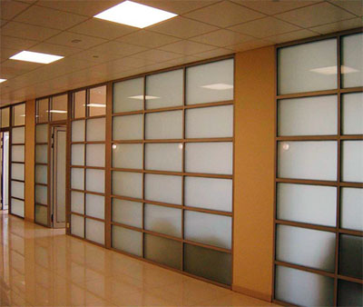

Офисные перегородки...

Офисные перегородки предназначены для организации рабочего пространства и формирования различных функциональных помещений с целью создания комфортных условий для работы.
Различные системы позволяют создавать изысканные интерьеры в холлах, переговорных, рабочих кабинетах, разделять залы в торговых центрах.
Многообразие индивидуальных решений достигается за счет широкого выбора конструктивных элементов, вариантов фактурного и цветового оформления системы. Широкое поле для дизайнерского поиска открывают неограниченные комбинации стеклянных и глухих секций, тонированных, матовых и декоративных стекол и жалюзи различных типов.
Богатейший выбор видов, цветов и фактур для глухого заполнения позволяет создать уникальный интерьер и оформить его в неповторимом стиле.
Цельностеклянные перегородки позволяют создавать единый облик рабочего пространства, более эффективно использовать естественное освещение, а также зрительно увеличивать помещение.